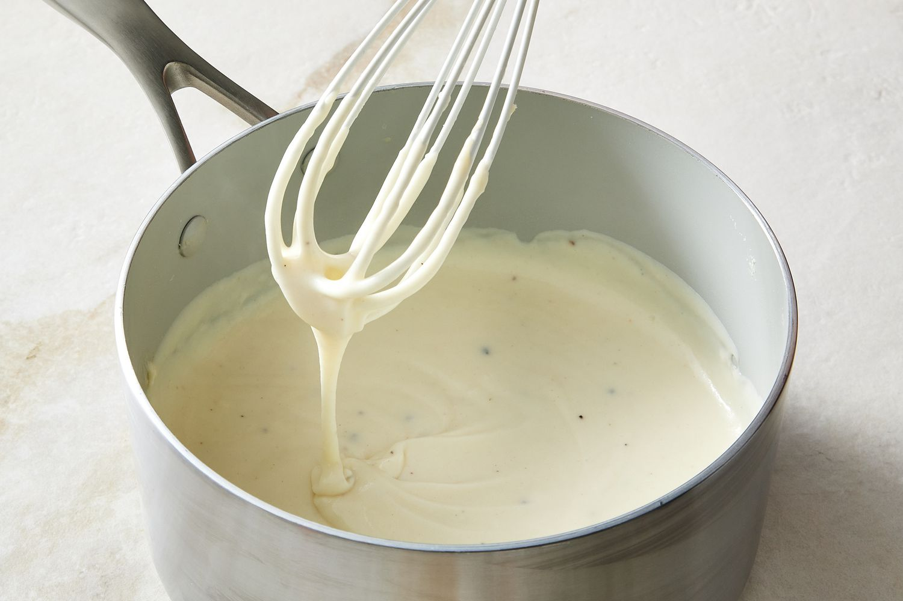
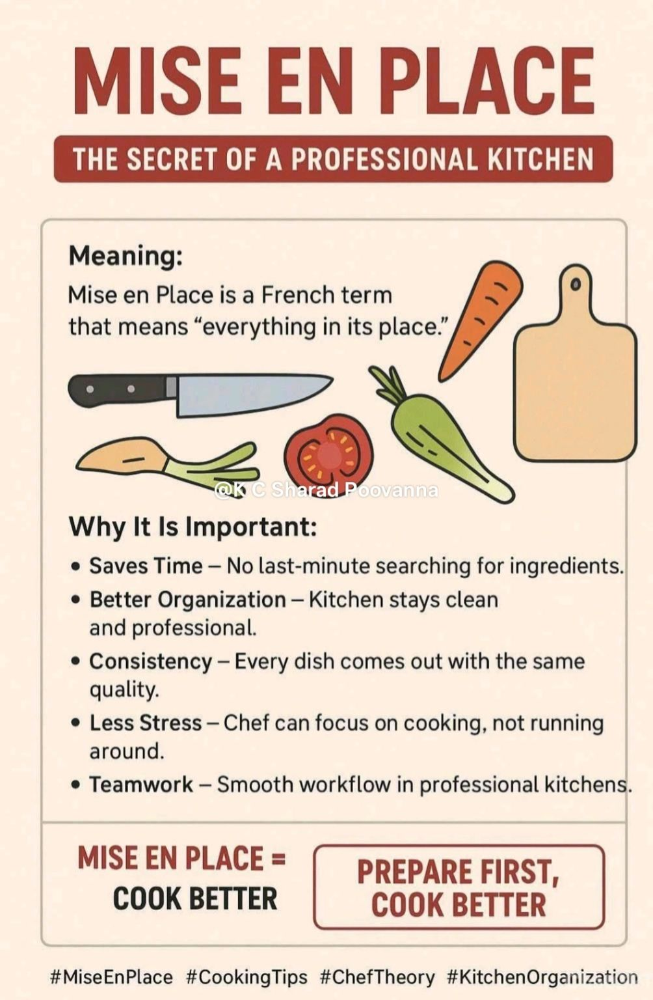

Bechamel Sauce
What is a Bechamel Sauce?
Bechamel is one of the 5 Mother Sauces taught in French Cuisine. It is a white, cream-based sauce made using a light roux made of equal parts flour and fat. The seasonings are typically kept light using nutmeg, onion, bay leaf and/or clove. It is considered a "Mother Sauce" because other sauces can be made from this base by adding different ingredients. For example, a Mornay sauce is made by adding Gruyere and Parmesan cheese to the Bechamel. Another example is the Soubise, which is made by adding caramelized onions, and blending until smooth.
Today, we will keep the recipe very simple and just use nutmeg and salt for the seasonings.

Sources for this section:
Mise en Place - Before We Start Cooking
"Mise en Place" is a French Culinary term that means "everything in its place". The phrase is used in many kitchens because it is extremely important to have everything you need set up in your cooking area before you begin cooking. This includes having your recipe on hand, making sure you have the right equipment/tools, and making sure your ingredients are washed and cut to size.

Image from: K C Sharad Poovanna
Equipment:
- Sauce Pan
- Whisk
- Wooden Spoon or a Spatula
- Strainer (optional)
Ingredients:
- 5 Tablespoons Butter
- 1/4 Cup All Purpose Flour
- 1 Quart Milk
- 1 Teaspoon salt, or to taste
- 1/4 Teaspoon ground/grated nutmeg, or to taste
Recipe:
- First thing we need to do is to make our light roux. Melt butter in the sauce pan over medium heat. As soon as the butter is fully melted, add your flour and mix with your wooden spoon/spatula. You want to cook it for just long enough to get rid of the raw flour smell, but not so long that it starts gaining color.
- Once the raw flour has been cooked out, take your pan off of the heat and add in a splash of your milk, whisk. Keep adding small amounts of milk at a time while whisking until the consistency is smooth. Once all of your milk has been incorporated, return the pan to heat.
- At this point, it is Very Important that you do not walk away. You need to sit there, and keep stirring your sauce until it is done. You can tell that the bechamel is done when, if you take some on the back of a spoon, run your finger through it and it leaves a clear path.(Shown in next photo)

Image from:
CIA Foodies
- Once you have determined your sauce is finished, take it off the heat. If you choose to strain your sauce, this is when you would. Otherwise, skip to the last step. Pour the sauce through the strainer into another container of your choosing. Do not use a spoon/spatula to press it through as that would let any large chunks pass into your finished product. If it is having trouble passing through the mesh, just lightly tap the sides of the strainer until it all passes through.
- The last step is to season with salt and ground/grated nutmeg as per the measurements given, or to taste. Adjust as needed.
Recipes Referenced:
© 2026 Taehyun Wilmoth. All Rights Reserved